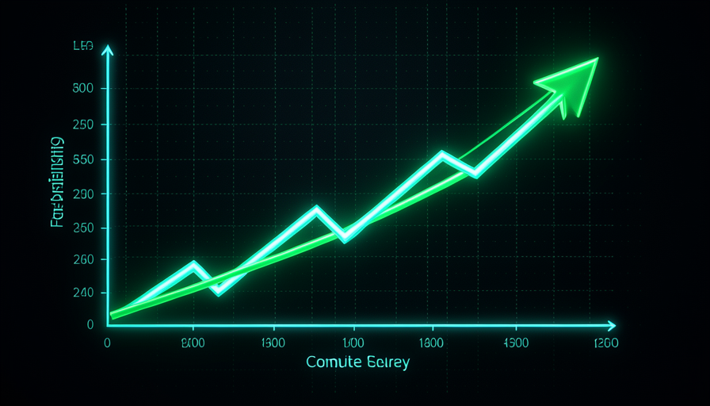
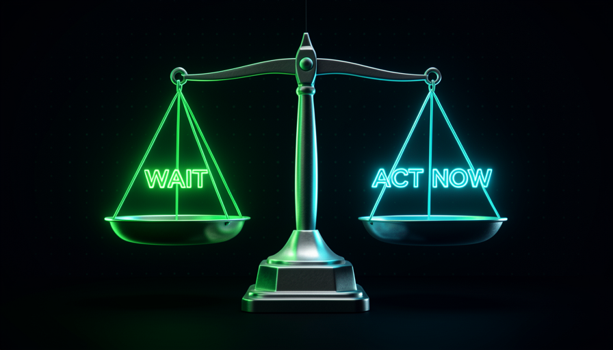

📖 Living glossary (read first — come back whenever you need to)
In module 1.1, you established the basic vocabulary (model, prompt, agent, skill, codebase, harness). Here, you’ll learn the terms new from this module. Remember these before moving on:
⏳ What is the Bitter Lesson
🧠 Imagine it this way: two chess teams. Team A spends years teaching clever rules by hand (“in this position, do this”). Team B just turns on a giant computer that plays millions of games against itself. At first, Team A wins. But the computer gets stronger with every passing year—and down the road, it crushes all the human-made rules. This is the bitter lesson.
In 2019, the researcher Rich Sutton wrote a short essay called "The Bitter Lesson" (the Bitter Lesson). The thesis: over decades of machine learning (ML), whenever researchers tried to embed “clever human knowledge” into the system, in the long run they lost to simple approaches that just threw more compute at the problem. Chess, Go, speech recognition, vision: in every case, brute-force computation outperformed handcrafted optimizations.
Why “bitter”? Because it’s humiliating for someone who’s smart. We wants that human ingenuity should prevail. But the engine behind the lesson is simple and relentless: compute grows very quickly and gets cheaper year after year. Your manual optimizations are fixed; compute is a tide that keeps rising. As Pocock sums it up in the video, the lesson is “trust that the underlying thing will improve"—the model will get stronger on its own, so it’s not as worthwhile to polish things by hand. Common mistake: thinking that the Bitter Lesson is a magic law that applies to everything, always, with no limits. It isn't — it's about a dimension (the model’s brain). Keep this caveat in mind: the rest of the module is precisely about where it no applies.
Human cleverness is almost a straight line. Compute is a curve that rises—and sooner or later overtakes it.

⚠️ Common beginner mistake
Read the Bitter Lesson and conclude, "therefore, any human effort is a waste." That's halfway to the trap. The lesson applies to model training (what OpenAI/Anthropic do)—not for your harness, which you control and which no improves on its own with more GPUs.
In one sentence: the Bitter Lesson says that, in AI training, more compute beats human cleverness — because compute scales, and cleverness doesn't.
Going deeper (optional): who is Rich Sutton and why does it matter?
Rich Sutton is one of the fathers of reinforcement learning (reinforcement learning), the technique that taught machines to beat humans at Go and video games. He experienced the lesson firsthand: he watched brilliant handcrafted methods get overtaken by larger models. His essay became almost a meme in the industry — every investor has cited "Bitter Lesson" to justify "just wait for the model to improve." Our course doesn't deny the lesson; it shows the limits for people who use AI day to day.
🛋️ The temptation to wait for AGI
🧠 Imagine it this way: you want to speak English. Someone says, "don't study — in a few years there'll be a perfect translator in your ear, just wait for it." Then the years go by, and the magic translator never becomes so perfect like this, and you still don’t speak English. Someone who studied a little every day is already having conversations.
From the Bitter Lesson comes a dangerous temptation: "if the model is going to improve on its own, why should I bother? Just wait for the AGI come in and solve everything in my place." Pocock is direct about this in the video: "standing around waiting for AGI without doing anything was a really dumb idea." The point is deliberately strong—he admits he flirted with this attitude himself and realized he was wasting time.
The waiting problem has three layers. First: AGI may not arrive when promised — AI promises are always delayed. Second: even if a much better model arrives, it doesn't fix your messy codebase or your vague prompt — these parts (the harness) are still your responsibility. Third, and the cruelest: while you wait, you doesn't develop any skills. Whoever takes action while waiting reaches the “future” with sharp fundamentals; whoever just waits arrives with nothing. Waiting seems like the smart choice (let the machine do it), but it costs the most.
Quick retrieval: according to Pocock, what is the problem with "just waiting for AGI"?
In one sentence: waiting for AGI to "do it for you" is, in Pocock’s words, "a very dumb idea" — AI is already here; the game is now.
⚡ Compute beats optimization (and the limit)
🧠 Imagine it this way: throw more compute at the model is like giving your car a more powerful engine—it improves the whole car at once. But a powerful engine doesn’t park by itself, choose the route, or change a tire. There are parts of the problem that none compute solves: they’re yours, outside the engine.
Where the Bitter Lesson is true: in the model’s brain. Training a larger model with more data and more GPUs really does deliver gains that no manual adjustment can match. That’s why David, in the interview, asks the obvious question: "why not both? Changing the engine improves everything instantly." He is right—a better model raises the whole tide: every task gets a little easier without you changing anything. Denying that would be foolish.
Where it has a limit: compute improves what is inside of the model. It no improves what’s outside — your vague prompt, your labyrinthine codebase, the missing skill, the wrong permissions. These parts of the harness don’t get GPUs; they only improve when you improves them. And there's one detail that changes everything, which Pocock uses all the time: a well-built harness lets a model cheaper deliver the same work— "have a codebase that's easier to change and you can use a dumber model to do the same job". In other words: improving the harness is a way to gather the compute gains without paying for the most expensive model. The two sides add up—they don’t compete.
🔬 Worked example: the same bug, two paths
Pocock says in the video that the Fable model found deep security bugs that others missed. The temptation: "See? Just wait for the model to get stronger." His answer is the Bitter Lesson applied with a limit:
"wait for the model" path
"Only Fable finds these bugs. I'll wait until every model is like this." → You become dependent on ONE expensive model and change nothing on your end.
"improve the harness" path
Pocock: "you'd find these bugs with cheaper models if you looked in the right places and gave them the right prompt/harness." → A daily security review cron job, using a simple model, scanning a new part of the repo each day. Same result, lower cost, and your.
In one sentence: compute improves the model’s brain, but everything OUTSIDE it (your harness) only improves through your own work—and a good harness lets a cheap model perform like an expensive one.
🏗️ Why act now
🧠 Imagine it this way: A gym. Waiting for “the best equipment in the world” before you start working out is an excuse. Anyone who starts today and trains with the equipment they have is already getting stronger — and when the new equipment arrives, they’ll use it much better than someone who just waited in the lobby.
The way out of the trap has a name: fundamentals. Pocock insists: "people focus on the wrong thing—the shiny new toy—when they should focus on what has been working for 30-40 years." Organizing code, writing a clear request, writing tests, and documenting well: none of that expires when a new model comes out. On the contrary—the better the model, the more it benefits from a well-maintained harness. The fundamentals are an asset that appreciates; the hype around this week’s model is what evaporates.
There's one more practical and powerful reason to act now: the setup agent-agnostic. If you build your prompts, skills, and codebase in a way that doesn't tie you to a single model, so—when the model improves—your work today still applies and it gets even better. It’s the best of both worlds: you get the benefit of the Bitter Lesson (a stronger model becoming available) without having sat idle waiting for it. Pocock ends with humility: "I'm not a guru/commentator — I'm doing the best I can with what I have right now." That’s the spirit: work with what exists today instead of betting everything on an uncertain tomorrow.

✓ Act now (fundamentals)
- • Improve the setup a little every day.
- • Learning what will last 30–40 years.
- • Keep everything agent-agnostic.
- • Use the best available model today.
✗ Waiting (the trap)
- • “AGI will solve it soon.”
- • Don’t touch the codebase or the prompt.
- • Betting everything on one future model.
- • Reaching the future without any skills.
In one sentence: act now on the fundamentals and keep everything agent-agnostic — that way, you can benefit from the better model of the future without wasting the present.
⚖️ Pocock's balance
🧠 Imagine it this way: a runner who gets new sneakers every week chasing the "perfect shoe" and never runs — versus a runner who trains every day AND buys a good pair when one comes along. The second runner wins the marathon. Pocock isn't "anti-model"; he's "good model + consistent training."
Here's the heart of the module, and where many people misunderstand Pocock. He no says "ignore the model, just work on the harness." It says it’s 50/50 (and not 90% model / 10% optimization, as most people think). When David challenges him — "use both: the best model AND the best harness" — Pocock agrees in the end: "it's 50/50; the problem is thinking through the model first." The order matters. If you start with the model, you lose focus on the fundamentals: "if I over-optimize around a model, I lose focus on the fundamentals."
Notice the nuance: Pocock admits that itself you may be falling into the Bitter Lesson by spending so much energy on the harness instead of simply trusting that the model will improve. It doesn't hide this risk—and that honesty is what makes the balance reliable. The practical synthesis that follows: improve your harness now (you control it; that's half the game) and use the best model available (it’s the other half, and you get it as a free gain when you switch). David describes exactly this mindset: actively improves the whole setup every day e uses the strongest model available. It’s not “or”—it’s “and.” Falling into the trap means treating it as “or.”
In one sentence: is 50/50—use the best model AND improve the harness; the mistake is to think about the model first.
🎯 Apply it without falling into the trap
🧠 Imagine it this way: every time you think "I'll wait for the new model to fix this," replace that thought with a question: "what can I fine-tune on my end today?". This simple reflex alone gets you out of the Bitter Lesson trap.
Wrapping up the module with a practical approach: the Bitter Lesson is real, but as a principle of AI training — not as an excuse for you to sit still. Whenever the temptation to "wait" hits, run the decision through the filter below. It turns the fear of "am I falling into the Bitter Lesson?" into an objective check. Copy and paste this when you catch yourself waiting:
Peguei-me "esperando o modelo melhorar"? Rode o filtro: [ ] É treino de modelo (interno)? -> ok, isso melhora sozinho; nao e minha tarefa. [ ] E harness (prompt/skill/codebase/permissao)? -> NAO espera; e comigo, agir HOJE. [ ] Meu setup esta agent-agnostic? -> se sim, o ganho do modelo futuro ja esta garantido. [ ] Estou usando o MELHOR modelo disponivel agora? -> use; e a outra metade (50/50). Regra: pense pelo HARNESS primeiro. E "E" (modelo + harness), nunca "so esperar".
Quick retrieval: what balance does Pocock advocate?
Going deeper (optional): "buy the lock"—the Bitter Lesson applied
Pocock uses a great analogy: "if someone keeps stealing your bike, maybe get a lock." In other words: when the model found a bug you missed, the lesson isn't "wait for the model to get smarter" — it's "build a system that continue finding these bugs in the future" (e.g., a daily security review cron job with a simple model). This means acting on the harness instead of waiting for compute — you'll see this in detail in Track 4 (Self-improving systems).
In one sentence: whenever you think "I’ll wait for the model," ask "what can I tune in my harness today?" — and take action.
🧾 Module Summary
Next module:
1.3 — Agent-agnostic setup: how to make your harness resilient to model changes.